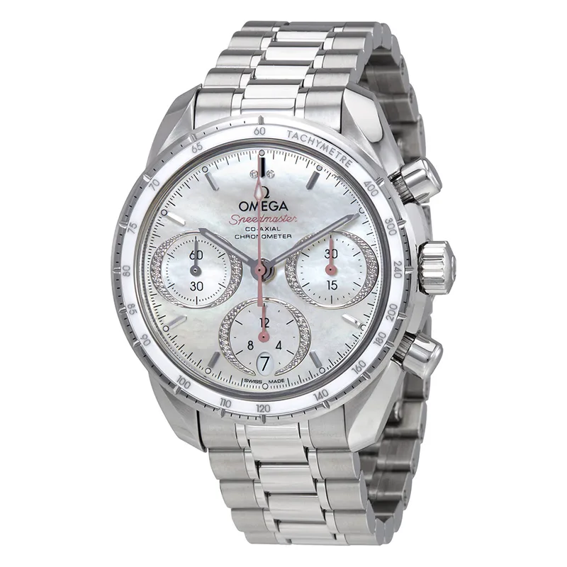

Encyclopedia / Omega / Speedmaster 38

Current deal · verified Oct 19, 2026, 10:32 PM ET
$6,460 List $7,600
Save $1,140 (15%) · new · Jomashop
Ref. 324.30.38.50.55.001 · In stock (per Jomashop)
Brand new from Jomashop, a grey-market (non-authorized) dealer, so expect the store's warranty (Jomashop lists '4 Year Jomashop Warranty') rather than the brand's. Also checked: WatchMaxx $6,460 (10:36 PM ET). 'List' is the retail figure the dealer displays; I could not confirm it on the brand's own US site. Prices change fast; check the store before you buy.
Price comparison: fixed-price listings
| Store | Condition | Box & papers | Asking price | Link | Checked |
|---|---|---|---|---|---|
| Watchfinder | pre-owned | Yes | $5,000 | View | Oct 19, 2026 |
| WatchMaxx | new | Yes* | $6,460 | View | Oct 19, 2026 |
| Jomashop | new | Yes* | $6,460 | View | Oct 19, 2026 |
| Chrono24 marketplace seller | unworn | Not stated | $7,220 | View | Oct 19, 2026 |
Fixed-price (buy-now) asking prices in USD for ref. 324.30.38.50.55.001, cheapest new and cheapest pre-owned with box and papers per store, sorted low to high and checked Oct 19, 2026 (ET). Buy-now listings only. Pre-owned listings are shown only when the listing states box and papers. * New from a grey-market dealer: comes boxed, but the warranty card may be the dealer's rather than the brand's. Chrono24 rows are individual third-party marketplace sellers. Prices change fast; confirm with the store.
What it really costs
| Market | Price | Source |
|---|---|---|
| List price per Jomashop & WatchMaxx | $7,600 | jomashop.com |
| New at Jomashop | $6,460 | Jomashop |
| New at WatchMaxx | $6,460 | WatchMaxx |
| Pre-owned (Chrono24 asks) | about $4,300 – $7,000 (median ~$5,300, 28 listings sampled) | Chrono24 |
All prices in USD, checked Oct 19, 2026 (ET). Pre-owned ranges are the middle 80% of asking prices on the first Chrono24 results page for that ref (about 60 listings, used and some unworn), fixed-price listings only. Grey-market = brand-new from a non-authorized dealer.
Buying guide
Key references
| Ref. | What it is | US retail |
|---|---|---|
| 324.30.38.50.55.001 | Speedmaster Chronograph Automatic Unisex Watch | $7,600 |
Which one I'd pick
Who it's for: anyone who finds the 42 mm Moonwatch too big. It's automatic, unlike the hand-wound Moonwatch.
What to check before you buy
- Warranty: grey-market new watches usually carry the dealer's warranty, not the brand's. Ask which one you get and whether the brand's warranty card is included.
- Exact reference: dial colour, size and strap change the price. Match the full ref (324.30.38.50.55.001) before comparing deals.
- Fakes and red flags: be wary of prices far below the ranges above, stock photos only, or sellers who won't show the caseback, serial and papers.
Alternatives worth a look
- Omega Speedmaster Moonwatch Professional: Full-size 42 mm hand-wound classic. (42 mm stainless steel, Calibre 3861, retail $7,800 (.001, hesalite, bracelet); $9,000 (.002, sapphire, bracelet))
- Omega Speedmaster Reduced (Speedmaster Automatic): Older, smaller automatic Speedmaster, pre-owned only. ()
- TAG Heuer Carrera Chronograph 39 Glassbox: A 39 mm racing chronograph. (39 mm stainless steel, Calibre TH20-00, retail $7,250 (CBS2210.FC6534, dealers' listed retail))
History
Omega was founded by Louis Brandt in La Chaux-de-Fonds, Switzerland, in 1848 and took the Omega name in 1903.
The 324.30.38.50.55.001 checked here is a 38 mm steel automatic chronograph with the Omega Calibre 3330, a white mother-of-pearl dial and a white ceramic bezel, per its Jomashop listing (listed there as a unisex model).
Specifications
| Brand | Omega |
|---|---|
| Model | Speedmaster 38 |
| Key references | 324.30.38.50.55.001 |
| Launch year | Not confirmed |
| Case | 38 mm Stainless Steel |
| Thickness | 15 mm |
| Band width | 18 mm |
| Crystal | Scratch Resistant Sapphire |
| Caseback | Solid |
| Bezel | Fixed |
| Bezel material | Stainless Steel with a White Ceramic |
| Dial | White Mother of Pearl |
| Strap/bracelet | Stainless Steel |
| Functions | Chronograph, Date, Hour, Minute, Second, Co-Axial Escapement, Chronometer |
| Movement | Omega Calibre 3330, automatic |
| Power reserve | About 52 hours |
| Water resistance | 100 m |
| Approx. US retail (Oct 2026) | $7,600 (list price per Jomashop & WatchMaxx) |
Specs from the retailer (Jomashop/WatchMaxx) or brand product page linked above for the main reference; see our research notes for which. Retail prices are list prices, not market value, and change often.
Highlights
- 38 mm case
- Automatic chronograph
- Speedmaster tachymeter styling
FAQ
How much is the Omega Speedmaster 38?
List price per Jomashop & WatchMaxx: $7,600. New, the best verified price was $6,460 at Jomashop (checked Oct 19, 2026, 10:32 PM ET). Pre-owned asks on Chrono24 mostly ran $4,300 to $7,000.
What movement does the Speedmaster 38 use?
The 324.30.38.50.55.001 checked here uses the Omega Calibre 3330 (automatic) with about 52 hours of power reserve.
How big is the Speedmaster 38?
38 mm Stainless Steel, 15 mm thick.
Is the Speedmaster 38 water resistant?
Yes, it's rated to 100 m.
Want this watch for less?
Every week I hunt down genuine deals on watches like the Speedmaster 38 and send the best ones. Free, one email a week.
Get the free weekly issuePrices and availability last checked Oct 19, 2026. No affiliate links: I don't earn anything if you buy. Sources are listed in our research notes and linked above.